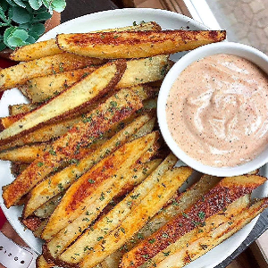

Ingredients
Garlic Fries:
- 2 large russet potatoes
- 2 tbsp olive oil
- 1/4 cup nutritional yeast (can sub Parmesan cheese)
- 1 tsp garlic
- 1 tsp paprika
- 1/2 tsp salt
- 1/2 tsp onion powder
- 1/2 tsp parsley
- Sprinkle of pepper
Vegan Chipotle aioli:
- 1/2 cup vegan mayo
- 1 chipotle pepper (from a can)
- 1 tsp Chipotle sauce (from the can)
- 2 tbsp unsweetened almond milk
- 1/2 lime juice
- 1/2 tsp chili powder
- 1/2 tsp garlic powder
- 1/2 tsp smoked paprika
- Sprinkle of salt and pepper
Instructions
Garlic Fries:
- Cut the potatoes into fries, coat with the oil, then add the spices.
Make sure the fries are
well coated.
- Baked at 425F for 40 mins, flipped halfway through.
Vegan Chipotle aioli:
- Blend together!
- Serve with Garlic Fries.
Source Here